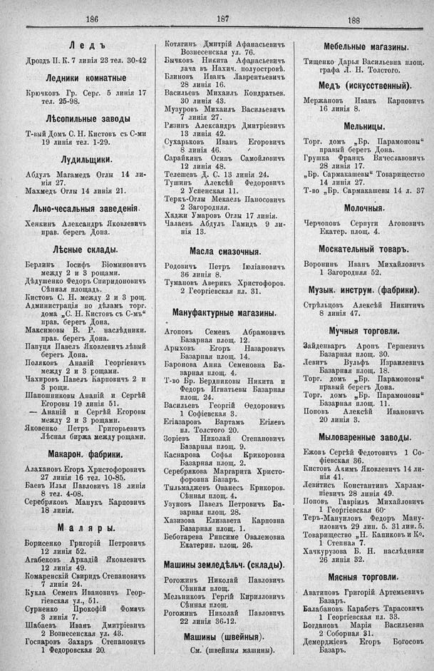

Лист источника 568
Скан

Распознанный текст
186
Ледъ
Дроздъ П. К. 7 линія 23 тел. 30-42
Ледники комнатные
Крючковъ Гр. Серг. 5 линія 17
тел. 25-98.
Лѣсопильные заводы
Т-вый Домъ С. Н. Кистовъ съ С-ми
19 линія тел. 1-29.
Лудильщики.
Абдулъ Магамедъ Оглы 14 ли-
нія 27.
Махмедъ Оглы 14 линія 21.
Льно-чесальныя заведенія.
Хенкинъ Александръ Яковлевичъ
прав. берегъ Дона.
Лѣсные склады.
Берлинъ Іосифъ Біоминовичъ
между 2 и 3 рощами.
Дѣдушенко Федоръ Спиридоновичъ
Сѣнная площадь.
Кистовъ С. Н. между 2 и 3 рощ.
Администрація по дѣламъ торг.
дома „С. Н. Кистовъ съ С-мъ“
прав. берегъ Дона.
Максимовы В. Р. наслѣдники.
прав. берегъ Дона.
Папуця Павелъ Яковлевичъ лѣвый
берегъ Дона.
Поляковъ Ананій Георгіевичъ
между 2 и 3 рощами.
Чахировъ Павелъ Карповичъ 2 и
3 рощи.
Шапошниковы Ананій и Сергѣй
Егоровы 19 линія 51.
— Ананій и Сергѣй Егоровы
между 2 и 3 рощами.
Яковенко Петръ Григорьевичъ
Лѣсная биржа между рощами.
Макарон. фабрики.
Алахановъ Егоръ Христофоровичъ
27 линія 16 тел. 10-85.
Баевъ Илья Павловичъ 18 линія
8 тел. 4-08.
Серебряковъ Манукъ Карповичъ
18 линія.
Маляры.
Борисенко Григорій Петровичъ
12 линія 52.
Агабековъ Аркадій Яковлевичъ
12 линія 49.
Комаренскій Свиридъ Степановичъ
7 линія 24.
Кукла Семенъ Ивановичъ Геор-
гіевская ул., 51.
Сурненко Прокофій Фомичъ
3 линія 7.
Шабаевъ Иванъ Дмитріевичъ
2 Вознесенская ул. 48.
Госпаровъ Захаръ Степановичъ
1 Федоровская 20.
187
Котягинъ Дмитрій Афанасьевичъ
Вознесенская ул. 76.
Бычковъ Никита Афанасьевичъ
дача въ Нахич. полуостровѣ.
Блиновъ Иванъ Лаврентьевичъ
28 линія 16.
Васильевъ Михаилъ Кондратьев.
30 линія 43.
Музуровъ Михаилъ Васильевичъ
7 линія 27.
Рязинъ Александръ Дмитріевичъ
13 линія 42.
Сухарьковъ Иванъ Егоровичъ
8 линія 46.
Сарайкинъ Осипъ Самойловичъ
12 линія 48.
Телешевъ Д. С. 13 линія 24.
Тушинъ Алексѣй Федоровичъ
2 Успенская 11.
Теркъ-Оглы Мекаель Паносовичъ
2 Загородная.
Хаджи Умаровъ Оглы 17 линія.
Чалаевъ Абдулъ Гамидъ 9 ли-
нія 13.
Масла смазочныя.
Родовичъ Петръ Іуліановичъ
36 линія 8.
Тумановъ Аверикъ Христофоров.
2 Георгіевская пл. 31.
Мануфактурные магазины.
Агоповъ Семенъ Абрамовичъ
Базарная площ. 12.
Арыховъ Егоръ Назаровичъ
Базарная площ. 14.
Баронова Анна Семеновна Ба-
зарная площ. 4.
Т-во Бр. Бердниковы Никита и
Федоръ Игнатьевы Базарная
площ. 24.
Васильевъ Георгій Ѳедоровичъ
1 Софіевская 3.
Егіазаровъ Вартамъ Егіяевъ
пл. Толстого 20.
Зоріевъ Николай Степановичъ
Базарная площ. 9.
Каснарова Софья Крикоровна
Базарная площ. 2.
Серебрякова Маргарита Христо-
форовна Базаръ.
Тылмаджевъ Ованесъ Крикоров.
Сѣнная площ. 4.
Узуновъ Павелъ Петровичъ Ба-
зарная площ. 28.
Хазизова Елизавета Карповна
Базарная площ. 1.
Беботарева Рипсиме Овалемовна
Екатерин. площ. 26.
Машины земледѣльч. (склады).
Рогожинъ Николай Павловичъ
Сѣнная площ.
Мельниковъ Гергій Кирилловичъ
Сѣнная площ.
Рогожинъ Николай Павловичъ
22 линія 36-12.
Машины (швейныя).
См. (швейныя машины).
188
Мебельные магазины.
Тищенко Дарья Васильевна площ.
графа Л. Н. Толстого.
Медъ (искусственный).
Мержановъ Иванъ Карповичъ
16 линія 8.
Мельницы.
Торг. домъ „Бр. Парамоновы“
правый берегъ Дона.
Грушка Францъ Вячеславовичъ
28 линія 17.
„Бр. Сармакашевы“ Товарищество
14 линія 27.
Т-во „Бр. Сармакашевы 14 л. 37
Молочныя.
Черчоповъ Серпуги Агоповичъ
Екатер. площ. 4.
Москательный товаръ.
Воронинъ Иванъ Михайловичъ
1 Загородняя 52.
Музык. инструм. (фабрики).
Стрѣльцовъ Алексѣй Никитичъ
8 линія 47.
Мучныя торговли.
Зайденваргъ Аронъ Гершевичъ
Базарная площ. 30.
Левитъ Вульфъ Израилевичъ
Базарная площ. 18.
Торг. домъ „Бр. Парамоновы“
правый берегъ Дона.
Торг. домъ „Бр. Парамоновы“
Базарная площ. 11.
Поповъ Алексѣй Ивановичъ
20 линія 3.
Мыловаренные заводы.
Ежовъ Сергѣй Федотовичъ 1 Со-
фіевская 36.
Кистовъ Акимъ Яковлевичъ 14 ли-
нія 41.
Левитись Константинъ Харлам-
піевичъ 29 линія 49.
Поповъ Гавріилъ Михайловичъ
1 Георгіевская 60·
Теръ-Мануиловъ Федоръ Ману-
иловичъ 29 лин. 5. 31 лин. 5.
Товарищество „Н. Капиковъ и Ко.
1 Степная 7.
Хачкурузова Б. Н. наслѣдники
26 линія 32.
Мясныя торговли.
Аватиповъ Григорій Артемьевичъ
Базаръ.
Балабановъ Карабетъ Тарасовичъ
1 Георгіевская пл. 33.
Богданова Марія Васильевна
2 Соборная 31.
Демерджіевъ Егоръ Богосовъ
Базаръ.